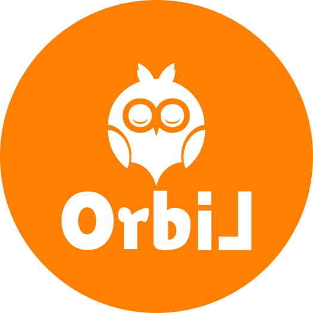

<ion-app>
  <ion-menu menuId="main-menu" contentId="main-content" >
    <ion-content class="ion-padding">
      <div class="menu-header-bg"></div>
      <div class="header-content">
        
        <ion-label>
          <h1>Orbil</h1>
          <p> Buen día {{rol}} </p>
        </ion-label>
      </div>

    <ion-menu-toggle>
      <ion-list class="list" lines="none">
        <ion-list-header> Indice </ion-list-header>
        <ion-item class="active" [routerLink]="['/home']">
          <ion-icon name="home-outline"></ion-icon> Inicio
        </ion-item>
        <ion-item [routerLink]="['/categorias']">
          <ion-icon name="library-outline"></ion-icon> Libros
        </ion-item>
        <ion-item [routerLink]="['/computador']">
          <ion-icon name="laptop-outline"></ion-icon> Portatil
        </ion-item>
        <ion-item *ngIf='permiso == true' [routerLink]="['/proyector']">
          <ion-icon name="videocam-outline"></ion-icon> Proyector
        </ion-item>
        <ion-item *ngIf='permiso == true' [routerLink]="['/ambiente']">
          <ion-icon name="storefront-outline"></ion-icon> Ambiente
        </ion-item>
      </ion-list>

      <ion-list class="list">
        <ion-list-header> Otros </ion-list-header>
          <ion-item [routerLink]="['/home']" lines="none">
            <ion-icon name="notifications-outline"></ion-icon> Permisos
          </ion-item>
          <ion-item [routerLink]="['/historial']" lines="none">
            <ion-icon name="folder-outline"></ion-icon> Historial
          </ion-item>
      </ion-list>

      <ion-footer class="ion-no-border">
        <ion-item [routerLink]="['/manual-usuario']" lines="none">
          <ion-icon name="alert-circle-outline"></ion-icon> Manual de usuario
        </ion-item>
        <ion-item (click)="logout()" lines="none">
          <ion-icon name="exit-outline"></ion-icon> Cerrar sesión
        </ion-item>
      </ion-footer>
    </ion-menu-toggle>

    </ion-content>
  </ion-menu>

  <ion-router-outlet id="main-content"></ion-router-outlet>
</ion-app>